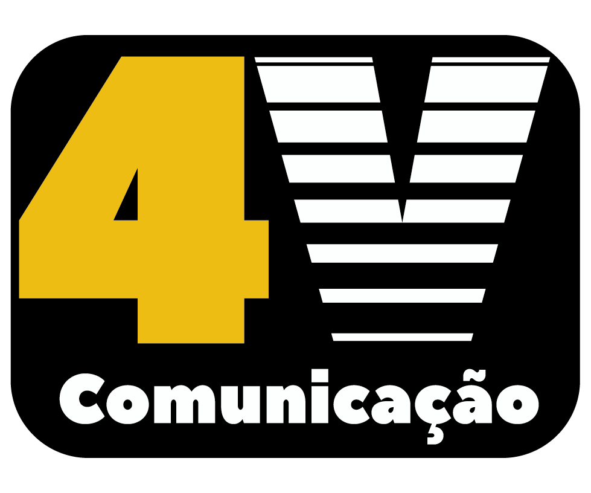
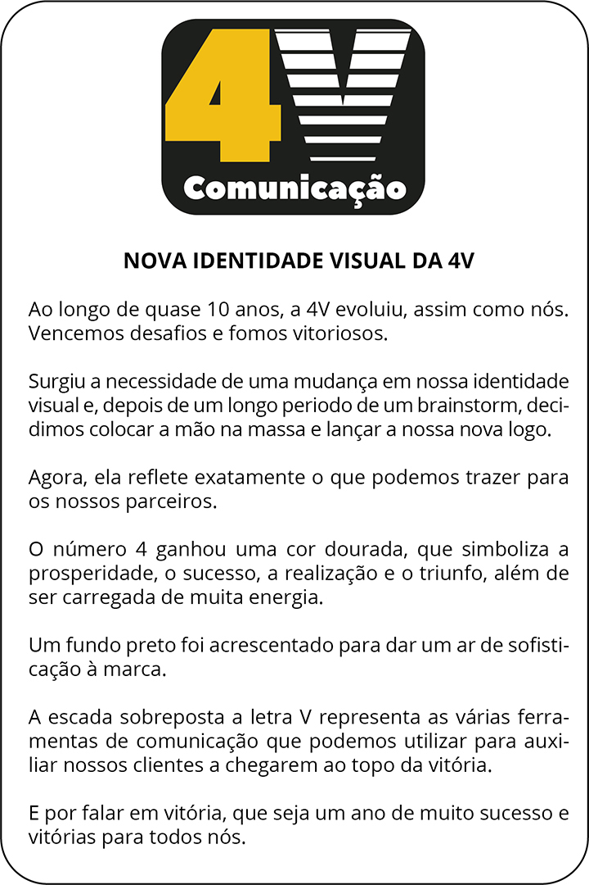
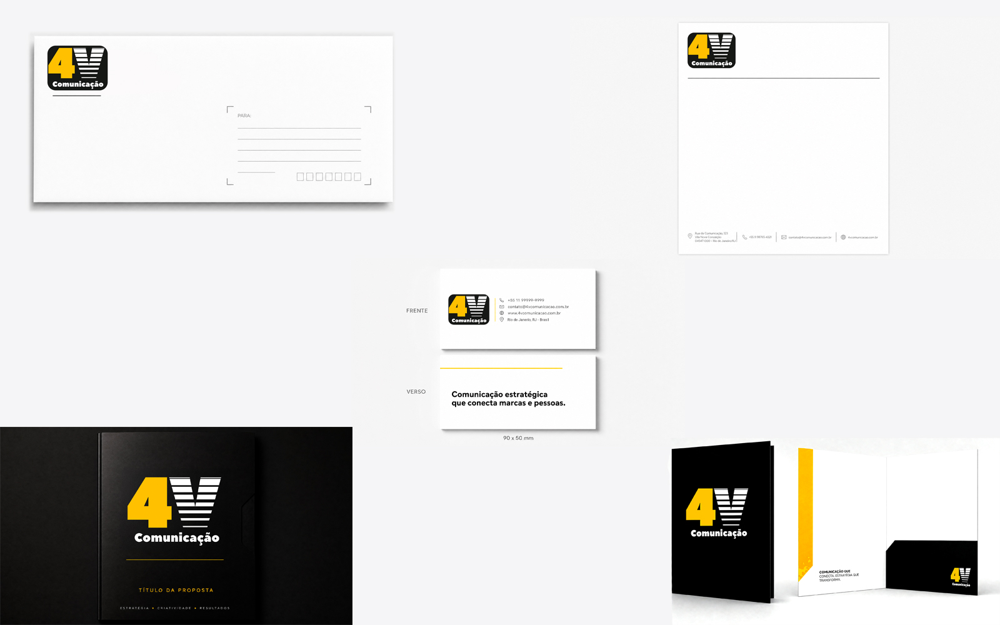
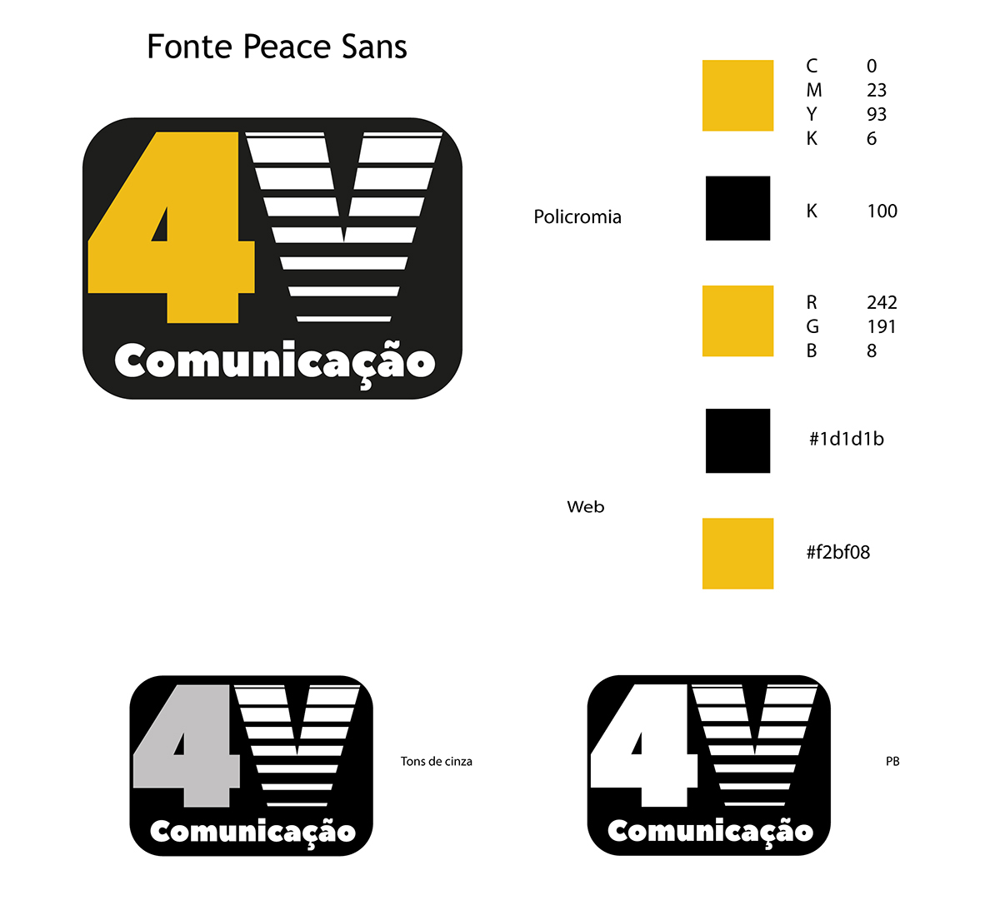

Identidade Visual 4V Comunicação
Projeto de identidade visual desenvolvido para representar o posicionamento, a personalidade e os serviços da 4V Comunicação.

Visão geral
A identidade visual da 4V Comunicação foi desenvolvida para apresentar a agência de maneira profissional, reconhecível e coerente em seus diferentes pontos de contato com o público.
O desafio
O principal desafio foi criar uma identidade capaz de transmitir criatividade, confiança e versatilidade, mantendo uma linguagem visual simples e adaptável para materiais digitais e impressos.
Soluções desenvolvidas
- Desenvolvimento do conceito visual da marca.
- Criação e refinamento do logotipo.
- Definição da paleta de cores institucional.
- Escolha e organização da tipografia.
- Criação de elementos gráficos complementares.
- Aplicação da identidade em materiais digitais e impressos.
- Padronização da comunicação visual da agência.
Construção e aplicações da identidade
A identidade foi desenvolvida como um sistema visual consistente, reunindo marca, cores, tipografia e elementos gráficos adaptáveis a diferentes formatos e pontos de contato.



Tecnologias e competências
Principais aprendizados
Durante o desenvolvimento, aprofundei meus conhecimentos em construção de marcas, organização de sistemas visuais, consistência gráfica e adaptação da identidade para diferentes formatos e aplicações.